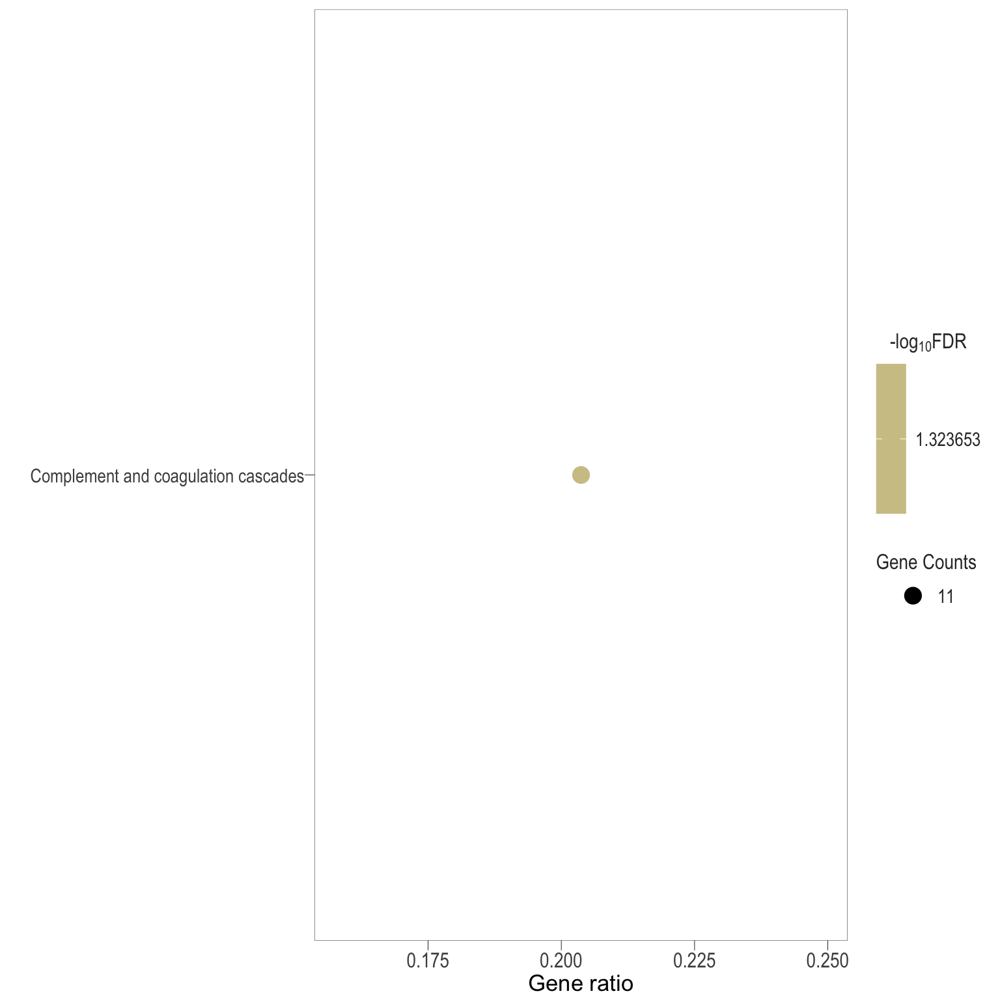

KEGG analysis
Ha M. Tran
09-01-2024
Last updated: 2024-01-09
Checks: 7 0
Knit directory: 140_treg_uNK/1_analysis/
This reproducible R Markdown analysis was created with workflowr (version 1.7.1). The Checks tab describes the reproducibility checks that were applied when the results were created. The Past versions tab lists the development history.
Great! Since the R Markdown file has been committed to the Git repository, you know the exact version of the code that produced these results.
Great job! The global environment was empty. Objects defined in the global environment can affect the analysis in your R Markdown file in unknown ways. For reproduciblity it’s best to always run the code in an empty environment.
The command set.seed(12345) was run prior to running the
code in the R Markdown file. Setting a seed ensures that any results
that rely on randomness, e.g. subsampling or permutations, are
reproducible.
Great job! Recording the operating system, R version, and package versions is critical for reproducibility.
Nice! There were no cached chunks for this analysis, so you can be confident that you successfully produced the results during this run.
Great job! Using relative paths to the files within your workflowr project makes it easier to run your code on other machines.
Great! You are using Git for version control. Tracking code development and connecting the code version to the results is critical for reproducibility.
The results in this page were generated with repository version c6d389f. See the Past versions tab to see a history of the changes made to the R Markdown and HTML files.
Note that you need to be careful to ensure that all relevant files for
the analysis have been committed to Git prior to generating the results
(you can use wflow_publish or
wflow_git_commit). workflowr only checks the R Markdown
file, but you know if there are other scripts or data files that it
depends on. Below is the status of the Git repository when the results
were generated:
Ignored files:
Ignored: .Rproj.user/
Ignored: 2_plots/3_FA/
Ignored: 2_plots/4_GSEA/
Untracked files:
Untracked: .gitignore
Untracked: 0_data/rds_objects/comp.rds
Untracked: 0_data/rds_objects/enrichGO.rds
Untracked: 0_data/rds_objects/enrichGO_sig.rds
Untracked: 0_data/rds_objects/enrichKEGG.rds
Untracked: 0_data/rds_objects/enrichKEGG_all.rds
Untracked: 0_data/rds_objects/enrichKEGG_sig.rds
Untracked: 0_data/rds_objects/pathway_details.rds
Untracked: 0_data/rds_objects/reducedTerms_ora.rds
Untracked: 0_data/rds_objects/scores_ora.rds
Untracked: 0_data/rds_objects/simMatrix_ora.rds
Untracked: 3_output/GO_sig.xlsx
Untracked: 3_output/KEGG_all.xlsx
Untracked: 3_output/KEGG_sig.xlsx
Untracked: functions.Rmd
Untracked: gsea.Rmd
Untracked: ipa.Rmd
Untracked: reactome.Rmd
Unstaged changes:
Modified: 0_data/rds_objects/lm.rds
Modified: 1_analysis/_site.yml
Deleted: 1_analysis/functions.Rmd
Deleted: 1_analysis/gsea.Rmd
Deleted: 1_analysis/ipa.Rmd
Deleted: 1_analysis/reactome.Rmd
Modified: 2_plots/1_QC/PC1_PC2.svg
Modified: 2_plots/1_QC/PC1_PC3.svg
Modified: 2_plots/1_QC/PC2_PC3.svg
Note that any generated files, e.g. HTML, png, CSS, etc., are not included in this status report because it is ok for generated content to have uncommitted changes.
These are the previous versions of the repository in which changes were
made to the R Markdown (1_analysis/kegg.Rmd) and HTML
(docs/kegg.html) files. If you’ve configured a remote Git
repository (see ?wflow_git_remote), click on the hyperlinks
in the table below to view the files as they were in that past version.
| File | Version | Author | Date | Message |
|---|---|---|---|---|
| Rmd | c6d389f | tranmanhha135 | 2024-01-09 | workflowr::wflow_publish(here::here("1_analysis/*.Rmd")) |
| Rmd | 05fa0b3 | tranmanhha135 | 2024-01-06 | added description |
# working with data
library(dplyr)
library(magrittr)
library(readr)
library(tibble)
library(reshape2)
library(tidyverse)
library(KEGGREST)
library(data.table)
library(KEGGREST)
# Visualisation:
library(kableExtra)
library(ggplot2)
library(grid)
library(pander)
library(viridis)
library(cowplot)
library(pheatmap)
library(DT)
library(extrafont)
# Custom ggplot
library(ggplotify)
library(ggpubr)
library(ggbiplot)
library(ggrepel)
# Bioconductor packages:
library(edgeR)
library(limma)
library(Glimma)
library(clusterProfiler)
library(org.Mm.eg.db)
library(enrichplot)
library(pathview)
library(pandoc)
library(knitr)
opts_knit$set(progress = FALSE, verbose = FALSE)
opts_chunk$set(warning=FALSE, message=FALSE, echo=FALSE)KEGG Analysis
KEGG pathway images reproduced by permission from Kanehisa Laboratories, September 2023
KEGG analysis, or Kyoto Encyclopedia of Genes and Genomes analysis, is a method that involves the mapping of molecular datasets, such as DE genes or proteins, to the reference pathways in the KEGG database. The KEGG database provides a comprehensive resource for understanding the molecular interaction and reaction networks within biological systems. KEGG pathways encompass a wide range of biological processes, including metabolism, cellular processes, environmental information processing, and human diseases.
More information about KEGG
The KEGG database is organized into several classes:
Pathway Maps (PATH): This class includes diagrams of molecular interactions and reactions in various biological pathways. Each pathway map is associated with specific biological processes or functions.
BRITE (B): BRITE is a hierarchical classification of biological entities, such as genes, proteins, and compounds. It provides a functional hierarchy and relationships between different biological components.
Module (M): Modules are sets of manually defined functional units, which can represent functional modules of genes or proteins in specific pathways.
Orthology (KO): The Orthology class provides information about orthologous gene groups, which are genes in different species that evolved from a common ancestral gene. This class is particularly useful for comparative genomics.
For this analysis, only KEGG pathway database will be used. This database is further sub-categorised into several classes:
- Metabolism
- Genetic Information Processing
- Environmental Information Processing
- Cellular Processes
- Organismal Systems
- Immune system (i.e. T cell receptor signaling pathway , Th1 and Th2 cell differentiation & etc.)
- Endocrine system (i.e. Estrogen signaling pathway , Progesterone-mediated oocyte maturation & etc.)
- Human Diseases
- Drug Development
Visualisation
For data exploratory purposes, the following visualisations are KEGG enrichment analysis performed with set of DE genes significantly below FDR < 0.1 or < 0.05 with and without FC threshold (TREAT). IMPORTANTLY, these KEGG terms are all significantly enriched but only with P-value < 0.05 and no P-value correction method.
Dot plot: illustrates the top 7 enriched KEGG pathways
- \(Gene ratio =\) the number of significant DE gene in the term / the total of number of genes in the term as indicated by the size
Table: list of all the significant KEGG pathways
- NOTE: To keep this a readable table, the full pathway description were removed, check the exported Excel spreadsheet for full details on pathways class, descriptions, related pathways, and references
Upset: illustrate the overlap of gene between different pathways
I recommend reading through the full list of significant KEGG pathways and selecting the most biologically relevant for better visualisation
FC=none, FDR<0.1
Dot plot

Table
Upset Plot

Treg vs PBS
Dot plot

Table
Upset plot
DT vs Treg
Dot plot

Table
Upset plot

Pathway specific heatmaps
Export Data
The following are exported:
KEGG_all.xlsx - This spreadsheet contains all KEGG pathways
KEGG_sig.xlsx - This spreadsheet contains all significant (P value < 0.05) KEGG pathways
R version 4.3.2 (2023-10-31)
Platform: x86_64-pc-linux-gnu (64-bit)
Running under: Ubuntu 22.04.3 LTS
Matrix products: default
BLAS: /usr/lib/x86_64-linux-gnu/blas/libblas.so.3.10.0
LAPACK: /usr/lib/x86_64-linux-gnu/lapack/liblapack.so.3.10.0
locale:
[1] LC_CTYPE=en_AU.UTF-8 LC_NUMERIC=C
[3] LC_TIME=en_AU.UTF-8 LC_COLLATE=en_AU.UTF-8
[5] LC_MONETARY=en_AU.UTF-8 LC_MESSAGES=en_AU.UTF-8
[7] LC_PAPER=en_AU.UTF-8 LC_NAME=C
[9] LC_ADDRESS=C LC_TELEPHONE=C
[11] LC_MEASUREMENT=en_AU.UTF-8 LC_IDENTIFICATION=C
time zone: Australia/Adelaide
tzcode source: system (glibc)
attached base packages:
[1] stats4 grid stats graphics grDevices utils datasets
[8] methods base
other attached packages:
[1] knitr_1.45 pandoc_0.2.0 pathview_1.40.0
[4] enrichplot_1.20.3 org.Mm.eg.db_3.17.0 AnnotationDbi_1.62.2
[7] IRanges_2.34.1 S4Vectors_0.38.2 Biobase_2.60.0
[10] BiocGenerics_0.46.0 clusterProfiler_4.8.3 Glimma_2.10.0
[13] edgeR_3.42.4 limma_3.56.2 ggrepel_0.9.4
[16] ggbiplot_0.55 scales_1.3.0 plyr_1.8.9
[19] ggpubr_0.6.0 ggplotify_0.1.2 extrafont_0.19
[22] DT_0.31 pheatmap_1.0.12 cowplot_1.1.2
[25] viridis_0.6.4 viridisLite_0.4.2 pander_0.6.5
[28] kableExtra_1.3.4 data.table_1.14.10 KEGGREST_1.40.1
[31] lubridate_1.9.3 forcats_1.0.0 stringr_1.5.1
[34] purrr_1.0.2 tidyr_1.3.0 ggplot2_3.4.4
[37] tidyverse_2.0.0 reshape2_1.4.4 tibble_3.2.1
[40] readr_2.1.4 magrittr_2.0.3 dplyr_1.1.4
loaded via a namespace (and not attached):
[1] splines_4.3.2 later_1.3.2
[3] bitops_1.0-7 polyclip_1.10-6
[5] graph_1.78.0 XML_3.99-0.16
[7] lifecycle_1.0.4 rstatix_0.7.2
[9] rprojroot_2.0.4 lattice_0.22-5
[11] MASS_7.3-60 crosstalk_1.2.1
[13] backports_1.4.1 sass_0.4.8
[15] rmarkdown_2.25 jquerylib_0.1.4
[17] yaml_2.3.8 httpuv_1.6.13
[19] DBI_1.2.0 RColorBrewer_1.1-3
[21] abind_1.4-5 zlibbioc_1.46.0
[23] rvest_1.0.3 GenomicRanges_1.52.1
[25] ggraph_2.1.0 RCurl_1.98-1.13
[27] yulab.utils_0.1.2 rappdirs_0.3.3
[29] tweenr_2.0.2 git2r_0.33.0
[31] GenomeInfoDbData_1.2.10 tidytree_0.4.6
[33] svglite_2.1.3 codetools_0.2-19
[35] DelayedArray_0.26.7 DOSE_3.26.2
[37] xml2_1.3.6 ggforce_0.4.1
[39] tidyselect_1.2.0 aplot_0.2.2
[41] farver_2.1.1 matrixStats_1.2.0
[43] webshot_0.5.5 jsonlite_1.8.8
[45] ellipsis_0.3.2 tidygraph_1.3.0
[47] systemfonts_1.0.5 tools_4.3.2
[49] treeio_1.24.3 Rcpp_1.0.11
[51] glue_1.6.2 gridExtra_2.3
[53] Rttf2pt1_1.3.12 here_1.0.1
[55] xfun_0.41 DESeq2_1.40.2
[57] qvalue_2.32.0 MatrixGenerics_1.12.3
[59] GenomeInfoDb_1.36.4 withr_2.5.2
[61] fastmap_1.1.1 fansi_1.0.6
[63] digest_0.6.33 timechange_0.2.0
[65] R6_2.5.1 gridGraphics_0.5-1
[67] colorspace_2.1-0 GO.db_3.17.0
[69] RSQLite_2.3.4 utf8_1.2.4
[71] generics_0.1.3 graphlayouts_1.0.2
[73] httr_1.4.7 htmlwidgets_1.6.4
[75] S4Arrays_1.0.6 scatterpie_0.2.1
[77] whisker_0.4.1 pkgconfig_2.0.3
[79] gtable_0.3.4 blob_1.2.4
[81] workflowr_1.7.1 XVector_0.40.0
[83] shadowtext_0.1.2 htmltools_0.5.7
[85] carData_3.0-5 fgsea_1.26.0
[87] ggupset_0.3.0 png_0.1-8
[89] ggfun_0.1.3 rstudioapi_0.15.0
[91] tzdb_0.4.0 curl_5.2.0
[93] nlme_3.1-163 org.Hs.eg.db_3.17.0
[95] cachem_1.0.8 parallel_4.3.2
[97] HDO.db_0.99.1 pillar_1.9.0
[99] vctrs_0.6.5 promises_1.2.1
[101] car_3.1-2 extrafontdb_1.0
[103] Rgraphviz_2.44.0 KEGGgraph_1.60.0
[105] evaluate_0.23 cli_3.6.2
[107] locfit_1.5-9.8 compiler_4.3.2
[109] rlang_1.1.2 crayon_1.5.2
[111] ggsignif_0.6.4 labeling_0.4.3
[113] fs_1.6.3 stringi_1.8.3
[115] BiocParallel_1.34.2 munsell_0.5.0
[117] Biostrings_2.68.1 lazyeval_0.2.2
[119] GOSemSim_2.26.1 Matrix_1.6-3
[121] hms_1.1.3 patchwork_1.1.3
[123] bit64_4.0.5 highr_0.10
[125] SummarizedExperiment_1.30.2 igraph_1.6.0
[127] broom_1.0.5 memoise_2.0.1
[129] bslib_0.6.1 ggtree_3.8.2
[131] fastmatch_1.1-4 bit_4.0.5
[133] downloader_0.4 gson_0.1.0
[135] ape_5.7-1